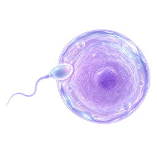
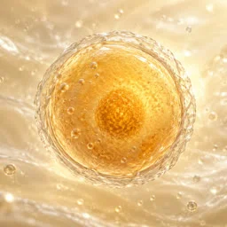
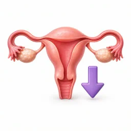
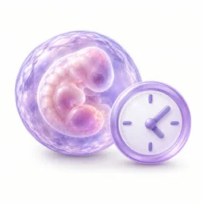
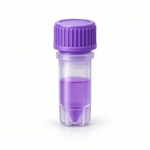
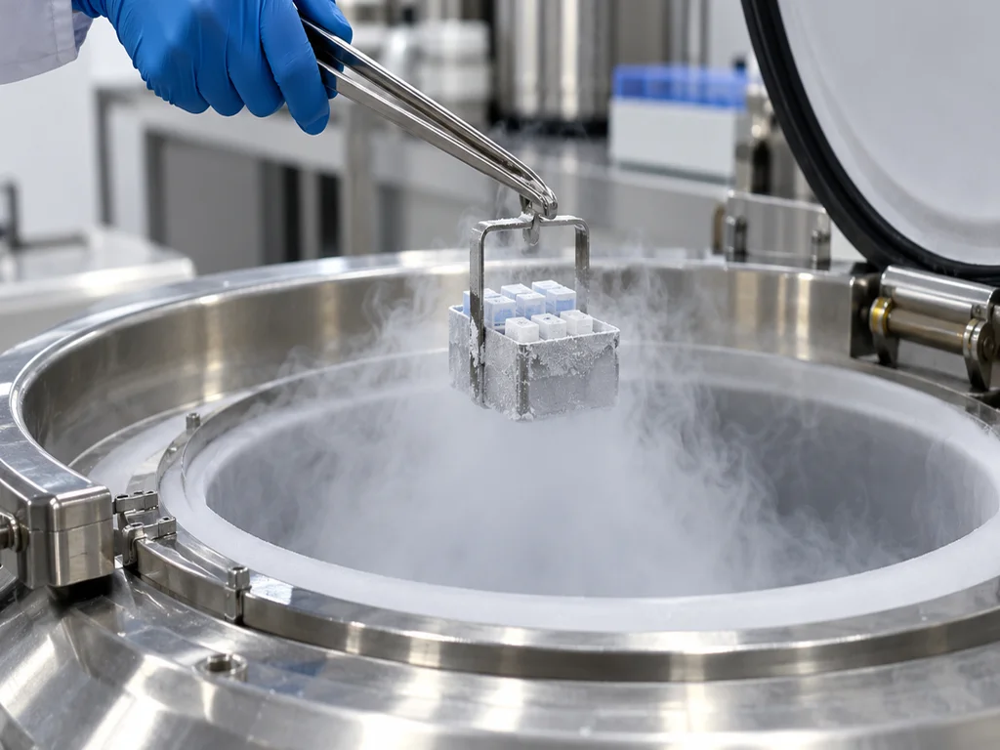
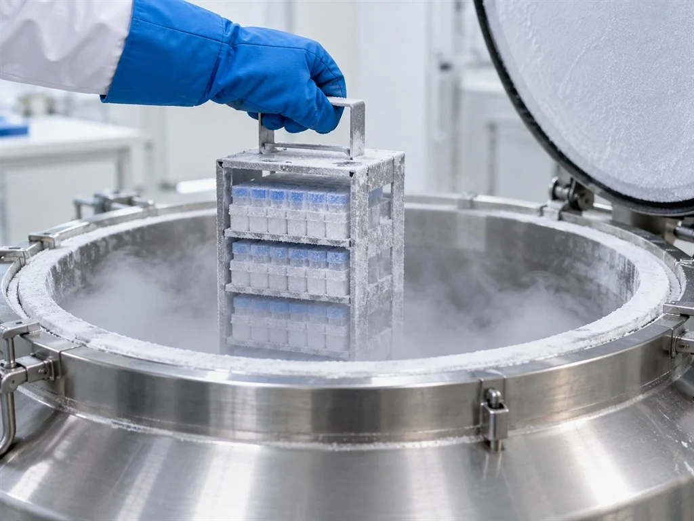
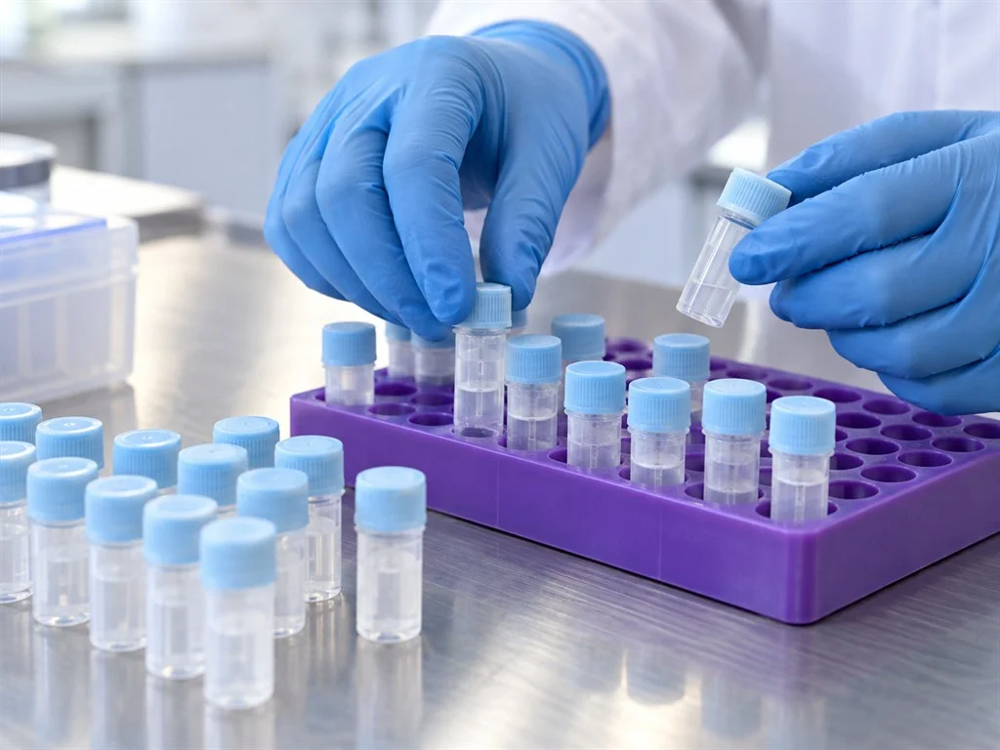

가임력 보존
현재 채취한 난자를 동결해 보관합니다.
보존을 검토할 수 있는 경우
임신을 미루거나 항암 치료를 앞두고 있다면 난자와 정자의 보존을 상담할 수 있습니다. 현재의 세포 상태와 치료 일정을 바탕으로 가능한 방법을 살펴봅니다.

고령 임신
임신 시기를 미루고 있다면 난소 기능을 살펴
현재 얻을 수 있는 난자를 보관할지
상담에서 검토할 수 있습니다.

항암 치료 예정
항암제나 방사선의 영향으로 생식 기능이
달라질 가능성이 있습니다.
치료를 시작하기 전에 난자·정자를 보관하면
이후의 임신 계획에 사용할 수 있습니다.

난소기능 저하
난소의 기능이 떨어질 때에는 얻을 수 있는
난자의 수 역시 감소할 수 있습니다.
기능의 변화를 확인하며 동결할 시기를
상의할 수 있습니다.

희소정자증
한 번에 확보되는 정자가 적으면 여러 차례 채취해 나누어 보관하는 방법을 검토하고, 시술에 사용할 때 필요한 양을 해동합니다.

정자 채취 어려움
정자를 바로 확보하기 어려운
경우에는 시험관 시술에 앞서 난자를
나누어 동결할 수 있습니다.
외부 접촉을 줄이는 폐쇄형 보관 방법을 사용합니다
동결 뒤에도 보관 용기와 온도 상태를 확인해야 합니다.
봄날은 세포를 전용 용기에 나누어 담고 외부와의 접촉을 줄이는 방식으로 보관합니다.
정자는 한 번의 시술에 쓸 양을 고려해 나누어 보관합니다. 사용할 때는 필요한 용기만 꺼내고 남은 검체의 보관 조건을 점검합니다.

특수 캐리어
환자별로 용기를 구분해 다른 검체와
서로 구별해 보관합니다.
외부와 분리하는 동결 용기
외부 환경과 접촉하는 범위를 줄여
용기 안에 보관합니다.
정자 손상 최소화
한 번 사용할 분량씩 정자를 분리해 두면
사용하지 않을 검체가 해동되는 일을 줄입니다.
봄날의 난자와 정자 보존
난자동결술
빠르게 온도를 낮추는 동결 방법을 적용하여,
현재 확보한 난자를 향후 임신 시도에 활용하도록 보관합니다.
정자동결술
확보되는 정자의 양에 따라 세 가지 방법을 검토해,
채취한 시점의 정자를 동결해 둘 수 있습니다.
난자 동결이 진행되는 다섯 단계
진료를 시작하기 전 해당 단계에서 할 일을 안내드리고,
검사 소견에 맞춰 진행할 항목을 정합니다.
검사
채혈과 초음파에서 난소의 반응 및 건강 상태를 확인하고 채취를 진행할 수 있는지 상의합니다.
과배란유도
한 주기에 여러 난포가 자라도록 주사제를 사용하고 초음파로 변화를 관찰합니다.
자라는 난포의 수와 크기를 보며 약물 사용량을 조율합니다.
채취
난포의 성숙 시점에 맞춰 마취 후 난자를 얻습니다. 채취에는 대개 20~30분 정도가 걸립니다.
초고속 동결
채취한 난자의 상태를 확인하고 보존할 세포를 빠르게 동결합니다.
보호액과 동결 조건을 조절해 세포 안의 얼음결정 형성을 줄이도록 합니다.
보관
세포의 식별 정보를 확인한 뒤 전용 용기에 담아 냉동 보관 장치로 옮깁니다.
사용 또는 보관 변경을 결정할 때까지 정해진 조건을 점검합니다.
정자 상태에 따라 정하는 동결 방법

정자 수가 충분할 때 적용하는 급속 동결
한 번에 시술에 필요한 양을 확보할 수 있을 때 검토합니다.
일반 동결 방식으로 보관
동결보호제의 사용량을 조절하며
빠르게 냉각해 세포를 보관합니다.
급속 동결 방식
검체를 얻은 날 동결 과정을 거쳐
정해진 환경에서 보관합니다.
검토가 필요한 경우
검사에서 보관 가능한 정자가 충분히 관찰된 경우

여러 번 채취한 검체를 함께 준비
한 번에 얻는 양이 적다면 채취 날짜를 나눠 검체를 확보하고 모아 보관합니다.
시술에 필요한 정자 수의 확보
몇 차례에 걸쳐 검체를 얻어 시술에 쓸 수 있는
정자를 모아 보관하는 방법입니다.
채취 날짜별로 구분한 보관
각 회차의 검체를 따로 동결해 두고
사용할 때 필요한 양을 함께 준비합니다.
검토가 필요한 경우
회당 확보되는 정자의 양이 많지 않은 경우
당일 즉시 냉동
채취술로 정자를 확보했다면 확인한 검체를 당일에 동결하는 방법을 검토합니다.
손실 없는 보존
검체를 얻은 직후 동결 과정을 시작해
보관 전까지의 대기 시간을 줄입니다.
오염을 줄이기 위한 정자 보관
확보한 정자의 수가 적으면 그 수에 맞는 방법으로
동결과 보관을 진행합니다.
검토가 필요한 경우
미리 정액을 얻기 어렵거나 수술적 채취를 상의하는 경우
보관 중인 난자와 정자는 사용 시기를 정한 뒤
난임 진료 과정에서 활용합니다.
난임 클리닉 보러가기
동결
(채취 직후 초고속 냉동)
보관
(폐쇄형 시스템, 기간 연장 가능)
해동 · 사용
(시험관아기 등 치료 연계)

봄날의 가임력 보존 관리
건강한 상태 보존
세포 상태를 확인하고 동결 중 손상을 줄이는 방법을 선택합니다.
체계적인 관리
외부와 분리된 용기와 사용 분량별 구분을 통해
보관 기간 중에도 온도와 용기를 점검합니다.
논스톱 치료 연계
임신을 준비할 때 보관 검체의 사용 계획을 상담합니다.
가임력 보존,
봄날에서 답해드립니다
얼마 동안 보관할 수 있나요?
보관 동의서에서 정한 기간과 연장 절차를 확인해 주세요. 계약 기간과 비용, 연장 의사 확인 방법은 상담 때 설명드립니다.
해동할 때 세포의 상태는 어떻게 확인하나요?
동결과 해동을 견디는 정도는 세포 상태에 따라 다릅니다. 보존 방법을 설명드릴 때 해동 뒤 사용 가능성과 한계도 함께 안내합니다.
항암 치료 일정이 정해졌다면 언제 상담하나요?
치료 시작일이 정해졌다면 일정을 알려 주세요. 담당 진료팀과 상의해 채취와 보존에 사용할 수 있는 시간을 검토합니다.
보관을 더 원하지 않을 때는 어떻게 하나요?
보관 중단을 원하시면 담당자에게 알려 주세요. 본인 확인과 필요한 동의 서류를 확인한 뒤 정해진 폐기 절차를 안내합니다.
보존을 상담할 수 있는 연령은 어떻게 되나요?
현재 난소나 고환의 기능과 향후 치료 일정을 확인한 뒤 보존을 진행할 수 있는 시기를 설명드립니다.